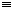

![[Front]](images/OpenGL3.gif)
![[Reference]](../buttons/ReferenceOff.gif)
![[Imp. Guide]](../buttons/ImpGuideOff.gif)
![[Index]](../buttons/IndexOff.gif) glShadeModel: select flat or smooth shading.
glShadeModel: select flat or smooth shading.
C Specification |
Parameters |
Description |
Errors |
Associated Gets |
See Also
void glShadeModel(
GLenum mode)
- mode
- Specifies a symbolic value representing a shading technique. Accepted
values are GL_FLAT and GL_SMOOTH. The
initial value is GL_SMOOTH.
GL primitives can have either flat or smooth shading. Smooth shading, the
default, causes the computed colors of vertices to be interpolated as the
primitive is rasterized, typically assigning different colors to each
resulting pixel fragment. Flat shading selects the computed color of just one
vertex and assigns it to all the pixel fragments generated by rasterizing a
single primitive. In either case, the computed color of a vertex is the
result of lighting if lighting is enabled, or it is the current color at the
time the vertex was specified if lighting is disabled.
Flat and smooth shading are indistinguishable for points. Starting when glBegin is issued and counting vertices and
primitives from 1, the GL gives each flat-shaded line segment i the
computed color of vertex i + 1, its second vertex.
Counting similarly from 1, the GL gives each flat-shaded polygon the computed
color of the vertex listed in the following table. This is the last vertex to
specify the polygon in all cases except single polygons, where the first
vertex specifies the flat-shaded color.
| Primitive Type of Polygon i |
Vertex |
|---|
| Single polygon
(i 1) |
1 |
| Triangle strip |
i + 2 |
| Triangle fan |
i + 2 |
| Independent triangle |
3i |
| Quad strip |
2i + 2 |
| Independent quad |
4i |
Flat and smooth shading are specified by glShadeModel with
mode set to GL_FLAT and
GL_SMOOTH, respectively.
- GL_INVALID_ENUM is generated if mode is
any value other than GL_FLAT or GL_SMOOTH.
- GL_INVALID_OPERATION is generated if glShadeModel is executed between the
execution of glBegin and the
corresponding execution of glEnd.
glGet with argument GL_SHADE_MODEL
glBegin,
glColor,
glLight,
glLightModel
![[Prev]](buttons/ArrowLeftOff.gif)
![[Next]](buttons/ArrowRightOff.gif)
![[Up]](buttons/ArrowUpOff.gif) C Specification
C Specification